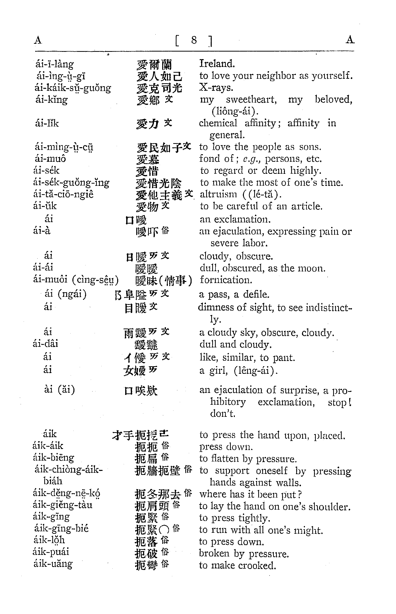
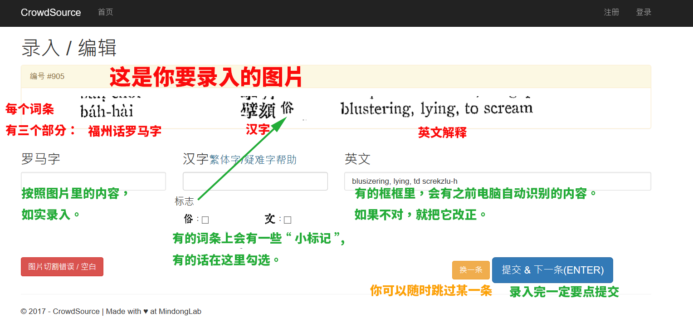
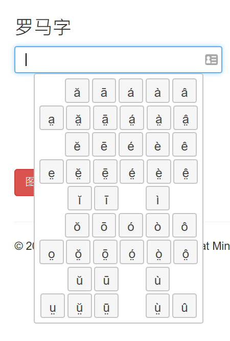
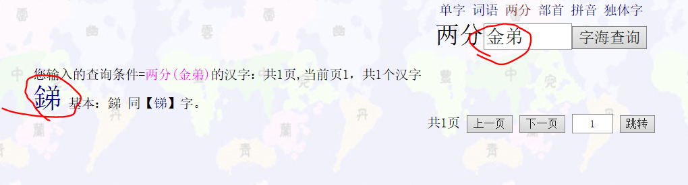
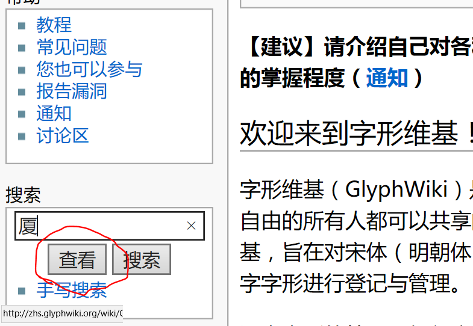
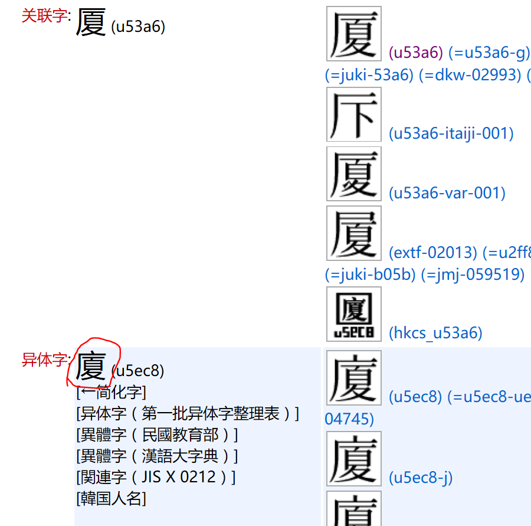
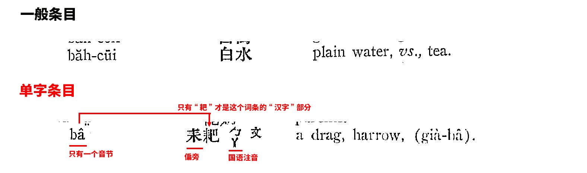
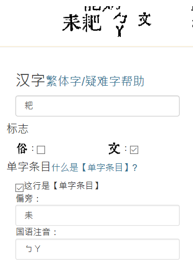
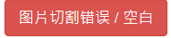

闽英大辞典，英文原名 Alphabetic Dictionary of the Foochow Dialect, Third Edition, 1929 这是一部由传教士著成的闽东语福州话 - 英语 的对照词典。第一版写于1870年，此为第三版。全书近2000页收入了近6万个词汇。 将此辞典数位化，不仅会成为目前最大的福州话词典； 对闽语古今变迁的研究，也能提供宝贵的资料。
简单来说，我们把字典切成一个个条目。通过网友一起录入和校对，来完成这项浩大的数位化工程。
闽英大辞典的一页长这样：
你会看到的是我们剪出来的一个个条目,像这样：
点击“我来录入”开始。
我们录入的原则是: 尊重原书，尽可能和原文一模一样。
当你点击罗马字录入框时，一个虚拟键盘会出现，让你选择一些特殊字符。
录入汉字时，我们要如实输入传统汉字（繁体字）。
常见的输入法都有“繁体”模式:
如果你想要更好的繁体字输入。我们推荐RIME 输入法。
用字海zisea.com的两分查字功能。

用Glyphwiki来查找异体字。以查“厦”的异体字为例。


闽英大辞典中，每当出现一个新汉字时，就会有一个特殊的词条（一行）。这种特殊行我们叫“单字条目”。
录入“单字条目”时，要把“偏旁”、“国语注音”填到不同的框里。像下面这样：
英文的录入没有太多特别的。要注意有的时候英文部分会带有福州话罗马字。
不需要。但是，如果你登录的话，我们会记录你的贡献量，并记入贡献者名单（当然你也可以选择做“匿名英雄”）。
请点击报告错误。

这个没关系。只要不影响你当前这条的录入就好。
你不需要打完全部的“框框”。你可以只打一种类型的框，比如只打汉字、只打罗马字、或者只打英文。没有打完的部分，系统会自动交给别人来打。
没关系，之后还会有校对。